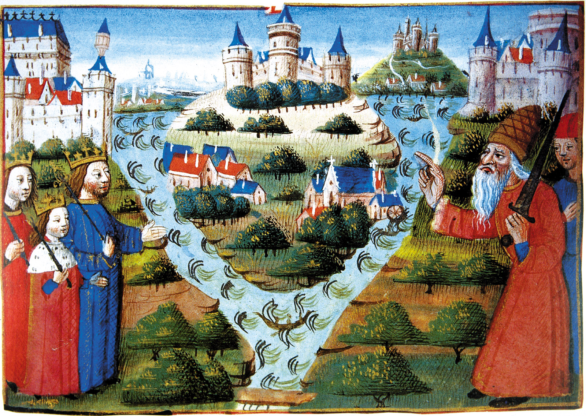

Karl Suur ja Miks Tema Impeerium Püsima ei Jäänud?
Armin Lepp 10E.1
Karl Suur kujatud hõbe mündi peal (vormitud umbes 9. saj.)
Sissejuhatus
Karl Suure riik oli sõjalisel teel ühendatud hulk tegelikult iseseisvaid võimupiirkondi, seda nii majanduslikult kui sisepoliitiliselt. Riiki hoidis koos vaid ühise kuninga tunnustamine, kelle võim rajanes sõjalisele jõule. Riigil puudus kindel keskvõim ja pealinn, samuti ühtne raharinglus, seadusandlus ja maksusüsteem. Suurriik ühendas peaaegu kogu katoliiklikku maailma ja pani aluse Lääne-Euroopa feodaalkorrale ning hilisematele Euroopa suurriikidele: Saksamaale, Prantsusmaale ja Itaaliale.
Karl Suur ja Frangi riik
Karl Suur sündis erinevate andmete järgi aastatel 742–748. Karl suur oli abieluväline poeg, kuid vaatamata sellele jagati Frangi riik pärast oma isa kunings Pippin Lühikese, surma 768. aastal tema ja ta venna Karlmanni I vahel. Karlmann suri aga vaid kolm aastat pärast isa surma, misjärel sai Karl Suurest Frangi riigi ainuvalitseja. 774. aastal, pärast kaht aastat sõdimist Rooma paavsti palvel, alistas Karl Suur langobardide kuninga ja nimetas end ise langobardide valitsejaks. Järgnesid pikad sõja-aastad Frangi riigi eri piirkondades – põhjas Saksidega, läänes moslemitega, idas slaavlastega ja lõunas, vallutatud aladel, kujutasid langobardide järeltulijad pidevat ohtu. Pärast pikka ja verist sõda alistas Karl oma viimase kampaaniaga 804. aastal lõpuks saksid. 30 aasta jooksul alistas Karl langobardid, saksid, baierlased, avaarid ja kindlustas turvalise piiri lääne pool moslemite vastu. Selle tulemusena sai Frangi riigist võimas impeerium, mis ulatus tänapäeva Hispaaniast Ukrainani ja Taanist Roomani.
Euroopa 814 aastal
Karl oli geniaalne riigijuht, kuigi enam-vähem kirjaoskamatu. Ta tuli toime kõikide valitsemisprobleemidega ja taipas, et hästi õlitatud administratsioon nõuab kompetentseid ametnikke, kes oskavad lugeda, kirjutada ja ka mõtelda. Ta sai aru, et haridus hoiab rahvast koos ja tagab terve majandusliku arengu, et on vaja koole, kunsti ja elujõulist kirikut. Ta ise õppis nii palju kui suutis, lastes endale pidevalt raamatuid ette lugeda.
Oma vaitsemaaja jooksul suutis luua tugevad poliitilised ja sotsiaalsed institutsioonid, mis elasid üle impeeriumi lagunemise ja jäid eeskujuks järgnevatele põlvedele. Samas teatakse Karl Suurt ka julmade meetodite poolest, mida ta kasutas oma poliitiliste vastaste mahasurumisel. Thüringeni mässulistel näiteks laskis ta silmad välja torgata. Kui Karl 814. aastal suri, pärisid saksa tava järgi riigi tema pojad.
Kroonimine Rooma keisriks
Euroopa luges ennast Rooma järglaseks ja Roomal ei olnud mitut keisrit. Karli ajal oli keisrivõimu kadumisest Läänes möödas veidi üle kolmesaja aasta. Rooma paavst Leo III teavitas oma paavstiks saamisest Karl Suurt ning saatis talle Püha Peetruse võtmed ja Rooma lipu. Karl Suur teatas paavstile, et tema ülesanne on kaitsta kirikut ja kindlustada selle misjonitööd, kuid paavst võiks tema kuningriigi ning vägede eest palvetada.
Kui Karl Suur saabus 800. aasta novembris Itaaliasse seoses kirikukoguga, mis tegeles Leo III vastu suunatud vandenõu uurimisega, siis päädis see tema jaoks ootamatult paavsti poolt esimeseks Rooma keisriks kroonimisega, mis tegi temast esimese Euroopa keisri 325 aasta jooksul. Keiser oli Rooma keiser, mitte Frankide keiser, tiitliga ei kaasnenud tegeliku võimu ulatust teiste kuningate üle. Keisriks kroonimine Roomas elustas uuesti Piibli traditsiooni Taaveti võidmisega Iisraeli kuningaks, millega pandi alus kõigi Euroopa monarhide legitiimsusele (Capet, Tudor, Habsburg).
Rooma-Saksa keisri troon, kus arvatavasti istus ka Karl Suur
Impeeriumi langus
Kuni oma surmani 814. aastal juhtis Karl Suur oma impeeriumi ainult troonilt ja ei osalenud enam sõjakäikudes. Selleks ajaks oli ta valitsemise Itaalias usaldanud oma pojapoja Bernardi ja ülejäänud kuningriigi oma ainsale elusolevale pojale Ludwig I-le. Samal viisil jaotati Karli impeerium ka pärast tema surma. Võimuvõitlused Karli järeltulijate vahel algasid kohe. Ludwig, kes päris kogu impeeriumi peale Itaalia ja oli uus keiser, hakkas jagama võimu oma poegade vahel. See muutis Bernardi ebakindlaks, ja ta soovis Itaalia iseseisvaks muuta. Kui Ludwig sellest teada sai, lasi ta Bernardi hukata. Samal ajal tõusid idas Frangi riigi vaenlased. Selle asemel, et ühiselt impeeriumi juhtida ja tõusvat ohtu ohjeldada, puhkesid võimuvõitlused, reetmised ja kodusõjad Ludwigi ja tema poegade vahel. Vaatamata sellele suutis Ludwig hoida impeeriumi koos kuni oma surmani 840. aastal. Pärast tema surma jagati impeeriumi valitsemine uuesti kolme poja vahel ja puhkes uus kodusõda. See lõppes 843. aastal Verduni rahulepinguga, millega jagati Frangi riik kolmeks iseseisvaks kuningriigiks. Ludwigi pojad – Lothar I sai Kesk-Euroopa ja Itaalia alad, Ludwig Sakslane sai Saksi ja ida alad ning Charles Paljaspea sai lõunaalad. Pärast Lothari surma 855. aastal jaotati tema kuningriik taas kolmeks, seekord tema poegade vahel. Kiiresti hakkasid uutel jagatud aladel tekkima oma ühiskonnad ja vanad rahvused eristuma üksteisest. Endise impeeriumi äärealadel oli tugev surve vaenlastelt, kes üritasid nüüd lõhenenud Frangi impeeriumilt oma alasid tagasi vallutada. Sellega oli Karli impeerium tõeliselt lõhenenud ja Frangi alad ühinesid vaid ühe korra veel – üürikeseks ajaks Karl Paksu ajal.
Ludwig I kujutatud õnnistamas frangi riigi kolmeks jagamist (15. saj.)
Kokkuvõte
Vana saksa tava, mis lubas isa päranduse elusolevate poegade vahel jagada, võis olla mõistlik, kui jagamisele läks talu või linnus, kuid nii suure impeeriumi jagamine kohe pärast traagilist sündmust, nagu Karli surm, oli Frangi impeeriumi püsimisele suurim võimalik oht. Kõik Karli lapsed ja lapselapsed tahtsid võimalikult palju võimu enda kätte saada, mis viis kohutavate reetmiste, hukkamiste, võimuvõitluste ja sõdadeni isade, poegade ja vendade vahel. Karli vallutatud alad olid alles hiljuti impeeriumiga liidetud, mistõttu lisasid lõhenenud Frangi võimule veel täiendavat pinget mässud ja vastuhakud äärealadelt. Pärandi jagamise tava kõigi poegade vahel kadus peagi Euroopa kuningate tavast, suuresti tänu õppetundidele, mida Frangi impeeriumi lagunemine andis.
Frangi suurriik, mis ulatus ta surma ajal Taanist Roomani ja Hispaania piirini, ei elanud temast endast kuigi palju kauem. Ent need vaimulikud ja vaimsed alused, mille ta rajas, on jäänud muutumatuks ning püsinud üle aegade, tänu millele Euroopa on maailmas ikkagi tajutav kui üks tervik.
Karl Suure valitsemise ajal hakati taas väärtustama antiikaja kultuuripärandit, õukond kogus enda ümber teadlasi, kunstnikke ja kirjamehi. Kultuuris oli eesmärk saavutada Vana-Rooma tase. Rajati ilmalikke õppeasutusi. Kujunes lõplikult välja kloostrite tähtsus käsikirjade ümberkirjutamises ja teaduse tegemises ning õpetamises (see traditsioon jätkus vara-uusajani välja). Hakati taas tootma kohalike münte – nn Karl Suure rahareform. Niinimetatud Karolingide renessanss oli eelkõige majandusliku tähtsusega. Võeti kasutusele uus kirjavorm: Karolingide minuskel.
Valisin selle teema, sest ma tahtsin lähemalt tutvuda Karl Suure, ehk euroopa Isa ja tema impeeriumiga.
Kasutatud allikad
- https://www.thecollector.com/greco-persian-wars-timeline/
- https://www.britannica.com/event/Greco-Persian-Wars
- https://medium.com/ostraka-a-durham-university-classics-society-blog/the-persian-wars-a-triumph-or-a-defeat-for-the-greeks-12d49bad8c07
- https://et.wikipedia.org/wiki/Kreeka-P%C3%A4rsia_s%C3%B5jad